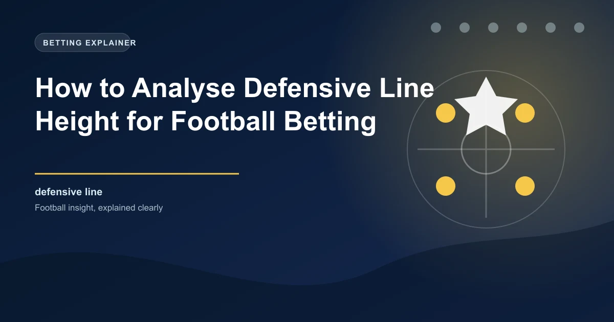

One of the most valuable yet underused tactical metrics in football betting is defensive line height. This measurement tells you where a team's defensive unit positions itself on the pitch when the opposition has the ball. Understanding how high or low a team pushes its backline directly influences your ability to predict goal totals, both-teams-to-score outcomes, and which teams are likely to concede from counter-attacks or set pieces. This guide breaks down what defensive line height means, how it correlates with betting outcomes, and how you can use it to find value in the markets.
Defensive line height is the average position of a team's four (or sometimes three) defenders relative to the pitch when the opposition is in possession. It is typically measured in metres from a team's own goal line. A team playing with a defensive line height of 40 metres keeps its backline approximately 40 metres from its own goal on average during defensive phases. A team at 30 metres sits deeper, while one at 45+ metres pushes very high.
This metric is distinct from a team's pressing line or PPDA (passes per defensive action), though the two are related. Pressing line measures where a team initiates its press higher up the pitch, while defensive line height specifically tracks the position of the defensive unit. A team might press high but maintain a moderate defensive line, or sit off the press but push its backline forward to compress space.
Low block (28-33 metres): Teams that defend deep, conceding territory and sitting compact near their own penalty area. Think of典型 counter-attacking setups or teams protecting a lead.
Medium block (33-38 metres): The most common range for balanced teams that defend in a structured mid-block. These teams concede some space but maintain defensive organisation.
High line (38-45+ metres): Aggressive teams that push their defensive line close to the halfway line, compressing space and relying on the offside trap. These teams accept the risk of balls played in behind for the benefit of a compact, dominant structure.
The relationship between defensive line height and goals is one of the strongest tactical correlations in football analytics. Teams playing with high defensive lines consistently feature in matches with more total goals, both scored and conceded. This occurs through several interconnected mechanisms:
When a team pushes its backline to within 40 metres of the halfway line, the space between the defenders and the goalkeeper increases significantly. This creates a larger zone for opposition attackers to exploit with runs in behind. Fast, intelligent forwards can time their runs to receive through balls in this space, leading to one-on-one situations with the goalkeeper. The high line is essentially a gamble: the defending team bets that its offside trap and pressing will prevent the ball from being played into that space, but when it fails, the consequences are often goals.
High-line teams rely heavily on the offside trap to neutralise the space behind them. When the trap works, it eliminates attacking threats and catches opponents in offside positions. However, the margins are razor-thin. A single mistimed step by one defender, or a perfectly weighted through ball, can put an attacker clean through on goal. Teams with high lines tend to concede more high-quality chances (higher xG per shot) because the chances that do get through are typically clear-cut opportunities rather than speculative efforts.
By pushing the defensive line high, teams compress the playing area, making it harder for opponents to play out from the back. This compressed structure leads to more turnovers in the opposition half, more attacking transitions, and consequently more scoring opportunities. High-line teams typically dominate possession and territorial advantage, which translates into more shots and more goals scored.
Statistical analysis across Europe's top five leagues reveals a clear pattern: matches featuring at least one team with a defensive line height above 40 metres average approximately 2.8 total goals, compared to 2.4 for matches where both teams sit below 35 metres. This 0.4 goal differential represents a significant edge when targeting the over/under markets. Teams like Liverpool under Klopp's final seasons, Manchester City under Guardiola, and Bayer Leverken under Xabi Alonso consistently posted defensive line heights above 40 metres and were involved in some of the highest-scoring matches in their respective leagues.
The opposite end of the spectrum is equally instructive for betting. Teams that deploy low defensive blocks, keeping their backline between 28 and 33 metres from goal, create a different match profile. Low blocks compress the space near the penalty area, making it extremely difficult for opponents to create clear-cut chances through central areas.
Low-block teams typically concede territory and possession but remain compact and organised. They force opponents into wide areas and long-range shots, both of which carry lower xG values. The result is fewer goals conceded from open play but potentially more goals from set pieces, as the sustained pressure around the box leads to corner kicks and free kicks in dangerous areas.
From a betting perspective, matches between two low-block teams tend to produce fewer total goals. These matches often feature tight, cautious football with few clear chances. The under 2.5 goals market and the no BTTS market become more attractive when both teams are committed to defensive solidity.
Several managers and teams have become synonymous with high defensive lines, and studying their patterns provides excellent betting case studies:
When analysing a match, look up both teams' average defensive line height for the season. If one team plays with a high line and the other with a low block, the dynamic creates specific betting opportunities. The high-line team will likely dominate territory but may be vulnerable to counter-attacks. The low-block team will look to exploit the space behind. This matchup frequently produces BTTS outcomes and over 2.5 goals, especially if the low-block team has fast forwards capable of making runs in behind.
The over/under goals market is the most directly influenced by defensive line height. Here is how to apply the data:
Target matches where at least one team plays with a defensive line above 40 metres. The high line creates more chances at both ends, increasing the probability of three or more goals. This effect is amplified when both teams play high lines, creating an open, end-to-end match. Look for these matchups especially in leagues where attacking football is prevalent, such as the Bundesliga and Eredivisie.
When both teams maintain low defensive lines (below 33 metres), the match is likely to be tight and low-scoring. These teams prioritise defensive compactness and are less likely to create or concede clear-cut chances. The under 2.5 goals market offers value in matches between two low-block teams, particularly in leagues like Ligue 1 or La Liga where tactical discipline is emphasised.
Defensive line height is also a strong predictor of BTTS outcomes. High-line teams are more likely to both score and concede because their aggressive positioning creates chances at both ends of the pitch. When a high-line team faces an opponent with pace on the counter, the BTTS yes market becomes particularly attractive.
Defensive line height is a powerful metric but must be contextualised. A team might maintain a high line in matches they dominate but drop deeper against stronger opponents. Always look at the specific matchup dynamics rather than relying solely on season averages. Additionally, consider the quality of the opposition's forward line. A high line against slow, immobile strikers is far less risky than a high line against pacey attackers like Kylian Mbappe or Vinicius Junior.
Several platforms provide defensive line height statistics for free or at low cost:
WinFulltime combines tactical analysis with statistical modelling to deliver value-driven predictions.
View Today's PredictionsGet live predictions and in-play tips for matches happening right now.
View In-Play Tips Win
Win